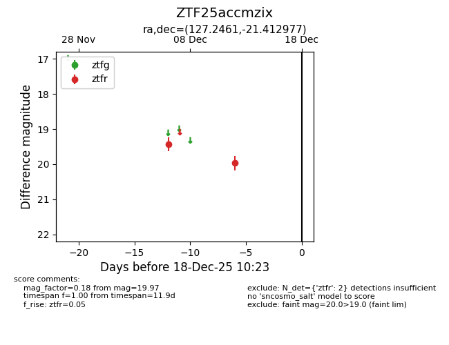
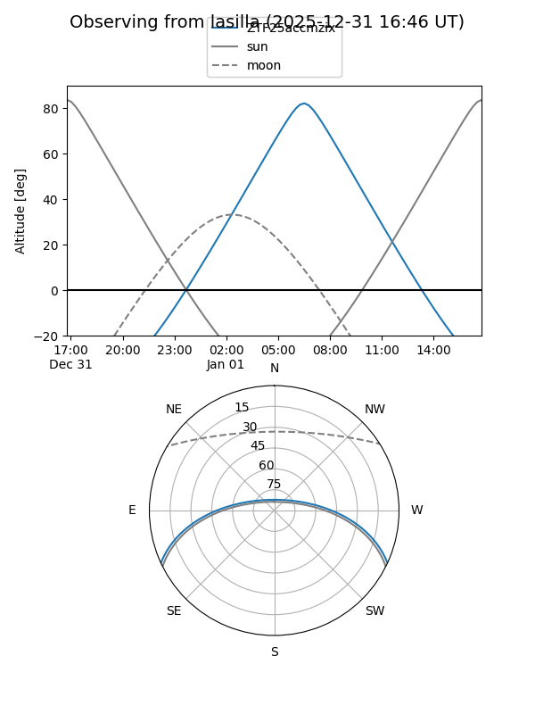
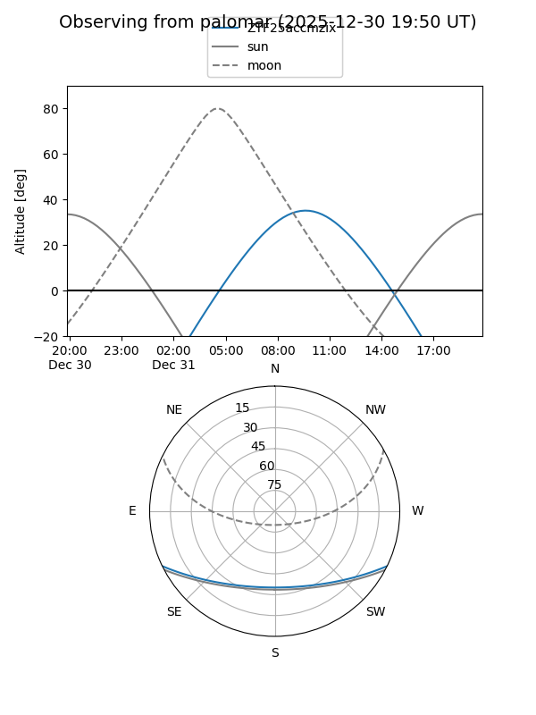

ZTF25accmzix
Target ZTF25accmzix at 2025-12-18 11:18
Aliases and brokers:
FINK: fink-portal.org/ZTF25accmzix
Lasair: lasair-ztf.lsst.ac.uk/objects/ZTF25accmzix
ALeRCE: alerce.online/object/ZTF25accmzix
alt names
ZTF25accmzix (ztf,fink_ztf)
Coordinates:
equatorial (ra, dec) = 127.2461,-21.41298
equatorial (HMS+DMS) = 08:28:59.05,-21:24:46.72
galactic (l, b) = (243.4691,+10.11526)
Photometry
last ztfr=19.97
2 ztfr detections
Lightcurve

Visibility


Additional plots